Project 2
Fun with Filters and Frequencies!
Task 1.1 - Convolutions from Scratch!
def convolve_four(image, kernel, padding = True):
if padding:
pad_h = kernel.shape[0] // 2
pad_w = kernel.shape[1] // 2
padded_image = np.pad(image, ((pad_h, pad_h), (pad_w, pad_w)), mode = 'constant', constant_values = 0)
else:
padded_image = image
out_h = padded_image.shape[0] - kernel.shape[0] + 1
out_w = padded_image.shape[1] - kernel.shape[1] + 1
output = np.zeros((out_h, out_w))
for i in range(out_h):
for j in range(out_w):
for ki in range(kernel.shape[0]):
for kj in range(kernel.shape[1]):
output[i, j] += padded_image[i + ki, j + kj] * kernel[ki, kj]
return output
def convolve_two(image, kernel, padding = True):
if padding:
pad_h = kernel.shape[0] // 2
pad_w = kernel.shape[1] // 2
padded_image = np.pad(image, ((pad_h, pad_h), (pad_w, pad_w)), mode = 'constant', constant_values = 0)
else:
padded_image = image
out_h = padded_image.shape[0] - kernel.shape[0] + 1
out_w = padded_image.shape[1] - kernel.shape[1] + 1
output = np.zeros((out_h, out_w))
for i in range(out_h):
for j in range(out_w):
region = padded_image[i:i + kernel.shape[0], j:j + kernel.shape[1]]
output[i, j] = np.sum(region * kernel)
return output
from scipy.signal import convolve2d
test_image = np.random.rand(100, 100)
test_kernel = np.ones((5, 5)) / 25
start_time = time.time()
result_four = convolve_four(test_image, test_kernel, padding = True)
time_four = time.time() - start_time
start_time = time.time()
result_two = convolve_two(test_image, test_kernel, padding = True)
time_two = time.time() - start_time
start_time = time.time()
result_scipy = convolve2d(test_image, test_kernel, mode = 'same', boundary = 'fill', fillvalue = 0)
time_scipy = time.time() - start_time
print(f"Test Four Loop Time: {time_four}")
print(f"Test Two Loop Time: {time_two}")
print(f"Test Scipy Time: {time_scipy}")
Test Four Loop Time: 0.17535185813903809
Test Two Loop Time: 0.0773160457611084
Test Scipy Time: 0.0
The runtime varies across the different approaches, with the two-loop approach being significantly faster than the four-loop approach (more than 2x speedup), and the scipy approach being dramatically faster than both manually implemented approaches.
In our manual approaches, boundaries are handled with zero-padding. The scipy approach does the same thing when provided with the correct function parameters.
Task 1.2 - Finite Difference Operator
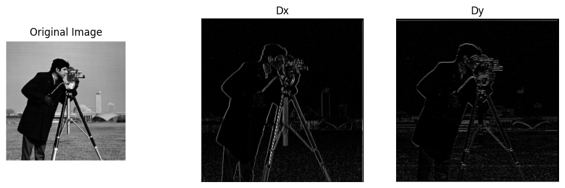 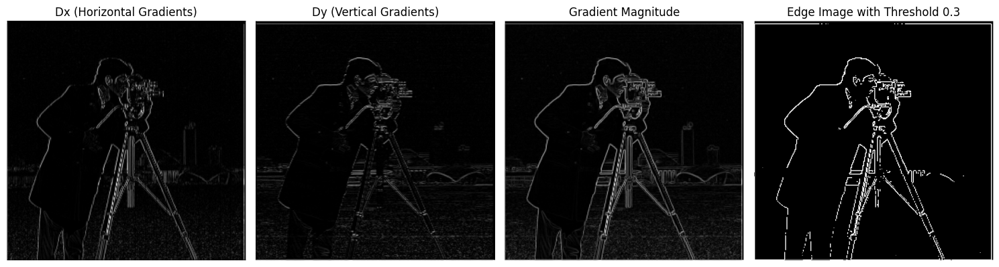I made a tradeoff in finding all edges vs. eliminating all noise, where I chose to prioritize eliminating noise over finding every possible edge. I did this because in the image above, there is very little noise, and all of the prominent edges in the image are captured. The edges that are omitted are mostly from the background, which isn't as relevant to the subject of the image (the cameraman).
Task 1.3 - Derivative of Gaussian (DoG) Filter
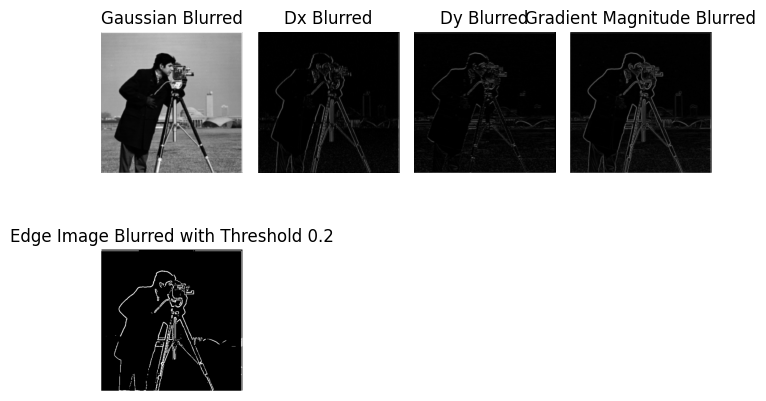The differences I see are that the noise is much less pronounced in the case of using the Gaussian smoothing before computing the Dx, Dy, and Gradient Magnitude images. The edges are also smoother, and the threshold for creating a good edge image is lower than in the non-smoothed case, because the signal-to-noise ratio is now better.
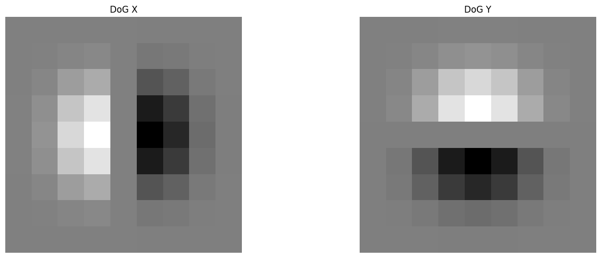 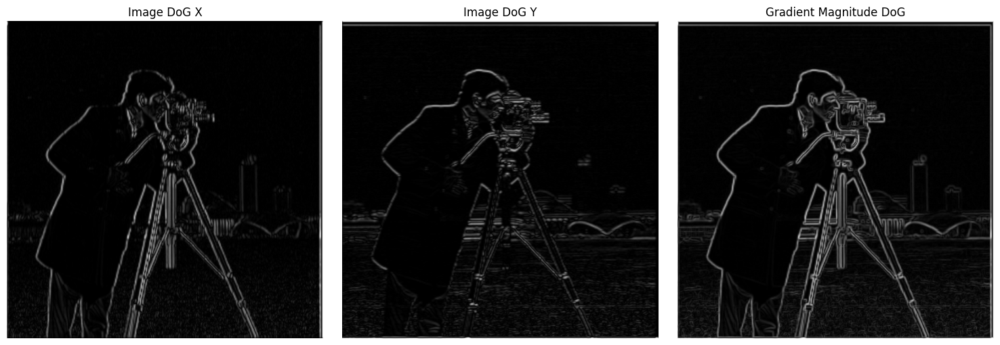We see the same results with a single convolution instead of two.
Task 2.1 - Image "Sharpening"
The unsharp mask filter works by blurring the original image (removing high frequencies), then subtracting the blur from the original (isolating the high frequencies / edges), amplifies these high frequencies, and adds them back to the original image. This serves to accentuate the higher frequencies in the image, which usually correspond to edges. It amplifies the difference between these pixels and their neighbors. A higher alpha / sharp value means more amplification / sharpening.
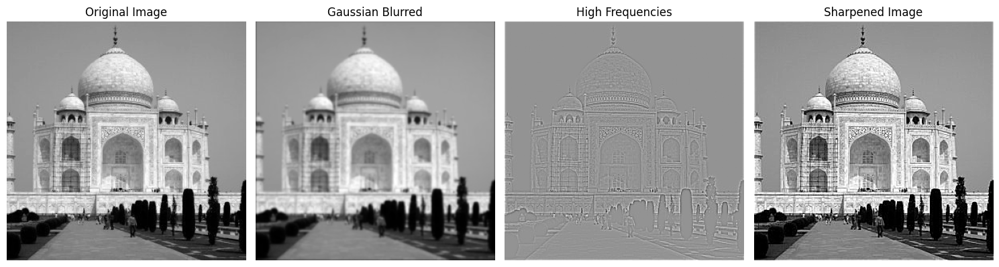 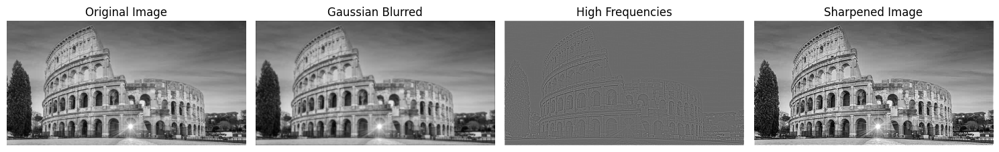 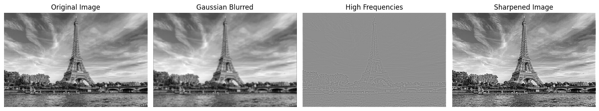 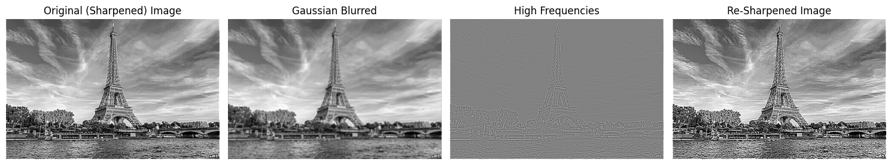When we try this strategy of blurring then sharpening an already sharp image (like the one above), we end up with an image that looks "too" sharp. It's contrast is too high and it looks strange.
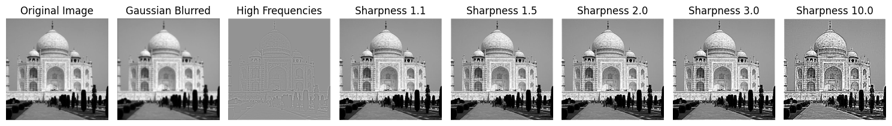Task 2.2 - Hybrid Images
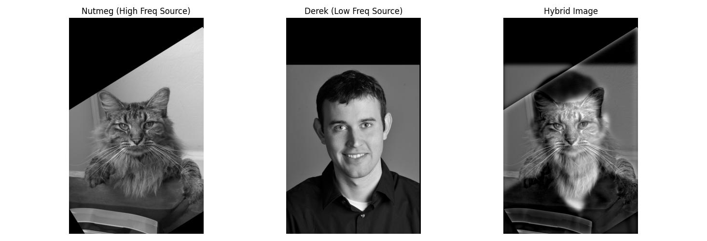 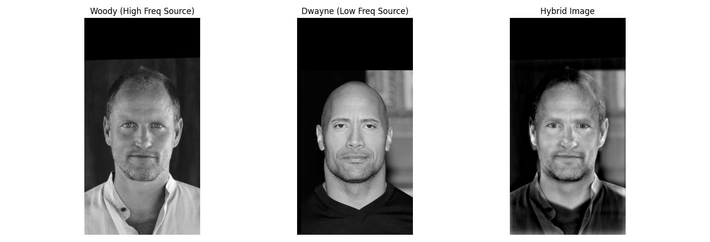 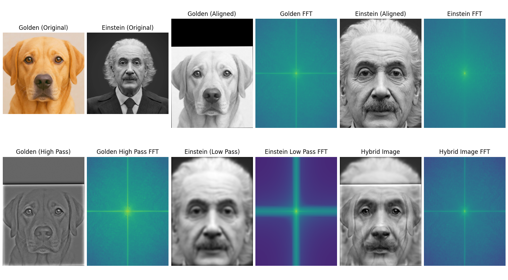I chose cutoff frequencies of 16 for Image 1 (Golden) and 8 for Image 2 (Einstein) empirically, as these yielded the best results.